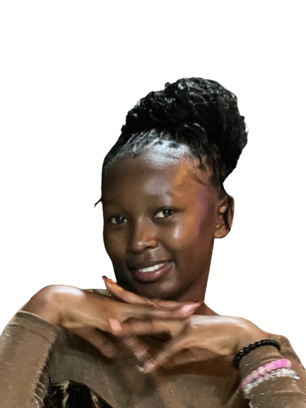

My Projects
.png)
Brand Identity Design

Flyer

poster

Movie poster

Instagram story

Wedding card
Creative Graphic Designer
I am a versatile professional with a strong foundation in both creative design and information technology. Holding a Diploma in Information Communication Technology (ICT) from Thika Technical Training Institute, I have developed technical expertise in computer systems, web development, and digital tools, which allows me to approach projects with both analytical and problem-solving skills. In addition to my technical background, I am a passionate graphic designer with experience in branding, social media content, and marketing materials. I focus on creating visually appealing and impactful designs that communicate clearly and deliver value. By combining my ICT knowledge with my creative abilities, I bring a unique perspective to digital projects, ensuring they are not only aesthetically pleasing but also functional and user-friendly.

THIKA TECHNICAL TRAINING INSTITUTE
During my diploma studies, I gained strong technical knowledge in computer systems, web development, and digital tools. This foundation strengthened my problem-solving skills and enhanced my ability to create functional and visually appealing digital solutions.
Brand Identity Design
Flyer
poster
Movie poster
Instagram story
Wedding card
Email: leahdaisy488@gmail.com
You can download my CV here:
Download CV (PDF)